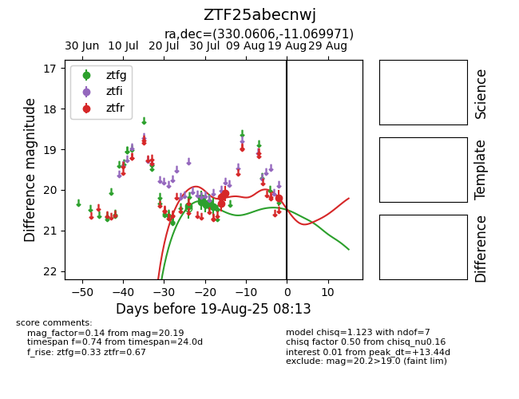

Target ZTF25abecnwj at 2025-08-19 08:13, see:
FINK: fink-portal.org/ZTF25abecnwj
Lasair: lasair-ztf.lsst.ac.uk/objects/ZTF25abecnwj
ALeRCE: alerce.online/object/ZTF25abecnwj
alt names
ZTF25abecnwj (ztf,fink)
coordinates:
equatorial (ra, dec) = (330.0606,-11.06997)
galactic (l, b) = (46.2192,-46.75452)
photometry
last ztfg=20.42, ztfr=20.19
7 ztfg, 4 ztfr detections
